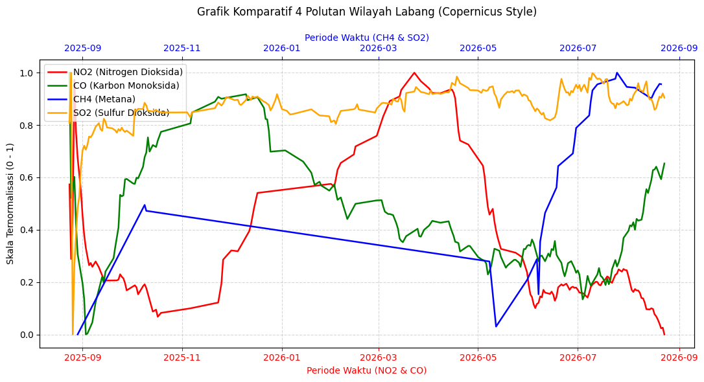

PROJECT SAINS DATA#
Analisis Kualitas Udara dan Distribusi Polutan di Kecamatan Labang, Bangkalan Menggunakan Data Satelit Copernicus#
Laporan Observasi Spasial dan Temporal (Periode Agustus 2025 – Agustus 2026)#
Latar Belakang Proyek#
Kecamatan Labang, sebagai titik akses utama Jembatan Suramadu, memiliki tingkat mobilitas kendaraan dan aktivitas antropogenik yang padat. Kondisi geografis dan infrastruktur ini berpotensi memberikan dampak signifikan terhadap fluktuasi kualitas udara di wilayah tersebut. Proyek ini bertujuan untuk melakukan pemantauan dan analisis kualitas udara secara komprehensif menggunakan instrumen satelit Sentinel-5P dari Copernicus Data Space Ecosystem.
Melalui pendekatan sains data, proyek ini mengekstraksi, memproses, dan memvisualisasikan data enam polutan utama (NO2, CO,SO2, dan CH4) selama satu tahun terakhir. Hasil dari analisis ini divisualisasikan ke dalam dashboard statis interaktif guna memberikan wawasan (insight) yang informatif mengenai tren tingkat pencemaran udara kepada masyarakat dan akademisi.
Business Understanding#
Apa itu Indeks Kualitas Udara (AQI)?#
Indeks Kualitas Udara (Air Quality Index / AQI) adalah standar pengukuran yang digunakan untuk melaporkan seberapa bersih atau tercemarnya udara di suatu wilayah. AQI mengukur konsentrasi polutan udara utama dan mengubahnya menjadi angka pada skala 0–500, di mana angka yang lebih rendah menunjukkan kualitas udara yang lebih baik dan angka yang lebih tinggi menunjukkan tingkat polusi yang lebih berbahaya. Skala AQI umumnya terbagi menjadi:
Rentang AQI |
Kategori |
Dampak Kesehatan |
|---|---|---|
0 – 50 |
Baik |
Kualitas udara memuaskan, risiko polusi rendah |
51 – 100 |
Sedang |
Kualitas udara dapat diterima |
101 – 150 |
Tidak Sehat bagi Kelompok Sensitif |
Kelompok sensitif (anak, lansia, penderita asma) mulai terdampak |
151 – 200 |
Tidak Sehat |
Seluruh populasi mulai mengalami efek kesehatan |
201 – 300 |
Sangat Tidak Sehat |
Peringatan kesehatan untuk seluruh populasi |
301 – 500 |
Berbahaya |
Kondisi darurat kesehatan masyarakat |
Unsur-Unsur Polutan Penyebab Kualitas Udara#
NO₂ (Nitrogen Dioksida)#
NO₂ adalah gas berwarna coklat kemerahan dengan bau menyengat. Polutan ini dihasilkan terutama dari:
Emisi kendaraan bermotor — pembakaran bahan bakar fosil pada mesin kendaraan
Aktivitas transportasi darat dan komuter
Pembangkit listrik atau sumber pembakaran lokal
Dampak kesehatan: iritasi saluran pernapasan, peningkatan risiko infeksi pernapasan, dan memperburuk kondisi asma.
CO (Karbon Monoksida)#
CO adalah gas tidak berwarna dan tidak berbau yang sangat berbahaya. CO dihasilkan dari:
Pembakaran tidak sempurna bahan bakar kendaraan bermotor
Kepadatan arus lalu lintas harian
Pembakaran biomassa seperti sampah atau kayu bakar
Dampak kesehatan: mengikat hemoglobin dalam darah lebih kuat dari oksigen, menyebabkan kekurangan oksigen pada organ tubuh, pusing, mual, dan dalam paparan tinggi dapat menyebabkan kematian.
SO₂ (Sulfur Dioksida)#
SO₂ adalah gas tak berwarna dengan bau tajam dan mengganggu. SO₂ berasal dari:
Emisi kendaraan yang menggunakan bahan bakar mengandung sulfur
Pembakaran bahan bakar fosil dari aktivitas perkotaan dan industri sekitar
Proses pemanasan atau pembakaran lokal
Dampak kesehatan: iritasi mata dan tenggorokan, memperburuk penyakit asma dan bronkitis, serta berkontribusi terhadap terbentuknya asam sulfat yang menyebabkan hujan asam.
CH₄ (Metana)#
CH₄ atau metana adalah gas rumah kaca yang sangat efektif dalam memerangkap panas. Sumber emisi CH₄ meliputi:
Aktivitas pertanian — pencernaan hewan ternak dan lahan pertanian
Limbah organik — pembusukan sampah dan sisa domestik
Proses alami dan aktivitas permukaan tanah
Dampak terhadap lingkungan: CH₄ merupakan gas rumah kaca yang kuat dalam memerangkap panas dalam jangka pendek, berkontribusi signifikan terhadap perubahan iklim dan pemanasan global.
Tujuan dan Ruang Lingkup Analisis#
Fase Business Understanding ini bertujuan untuk menerjemahkan permasalahan lingkungan nyata ke dalam kerangka kerja analitik berbasis data satelit. Melalui pemanfaatan data penginderaan jauh (remote sensing) dari platform Copernicus Sentinel-5P, analisis ini dirancang untuk:
Menggambarkan tren fluktuasi historis konsentrasi polutan dari waktu ke waktu (analisis temporal).
Memetakan sebaran wilayah secara spasial melalui indikator gradasi warna zona kualitas udara (dari kategori baik/hijau hingga buruk/merah).
Memberikan informasi valid yang dapat dijadikan acuan mitigasi lingkungan atau pengambilan kebijakan di wilayah studi.
Data Understanding#
Pengumpulan Data#
Data polusi udara diakuisisi (crawling) dari satelit Sentinel-5P melalui Copernicus Data Space Ecosystem dalam format NetCDF (.nc) yang memuat informasi konsentrasi gas atmosfer secara spasial.
Eksplorasi Data#
Visualisasi Spasial (Peta): Memetakan sebaran geografis polusi secara interaktif menggunakan library Folium.
Visualisasi Temporal (Grafik): Mengekstrak data ke format CSV untuk memvisualisasikan tren harian melalui grafik time-series.
Pengecekan Kualitas Data: Mengidentifikasi data kosong (missing values) akibat tutupan awan (cloud cover) serta anomali (outliers/noises) dari galat sensor satelit.
Rincian Pengambilan Data:#
Pengambilan data difokuskan khusus menggunakan titik koordinat (bounding box) Kecamatan Labang, Kabupaten Bangkalan. Data ditarik berurutan setiap hari dengan rentang waktu observasi selama satu tahun penuh, yaitu dari tanggal 24 Agustus 2025 s.d. 24 Agustus 2026.
Penentuan Area of Interest (AOI) dan Batas Spasial Wilayah Studi#
![image.png]()
Tahap Data Understanding ini dilakukan dengan mendefinisikan cakupan wilayah geografis (Area of Interest/AOI) studi kasus di Kecamatan Labang, Kabupaten Bangkalan. Batas wilayah direpresentasikan menggunakan format GeoJSON berupa poligon tertutup (polygon coordinates) yang terdiri dari serangkaian titik koordinat lintang dan bujur (latitude dan longitude).
Pemanfaatan format GeoJSON ini berfungsi sebagai batasan spasial presisi (bounding box dan geometri area) saat melakukan ekstraksi data dari platform pengolahan citra satelit Sentinel-5P. Dengan mendefinisikan AOI secara spesifik, data polutan yang ditarik dari server hanya mencakup wilayah administratif Kecamatan Labang dan menghindari bias dari area di luar zona penelitian.
!pip install openeo
Requirement already satisfied: openeo in c:\users\asus\appdata\local\programs\python\python39\lib\site-packages (0.51.0)
Requirement already satisfied: requests>=2.26.0 in c:\users\asus\appdata\local\programs\python\python39\lib\site-packages (from openeo) (2.32.5)
Requirement already satisfied: urllib3>=1.9.0 in c:\users\asus\appdata\local\programs\python\python39\lib\site-packages (from openeo) (2.6.3)
Requirement already satisfied: shapely>=1.6.4 in c:\users\asus\appdata\local\programs\python\python39\lib\site-packages (from openeo) (2.0.7)
Requirement already satisfied: numpy>=1.17.0 in c:\users\asus\appdata\local\programs\python\python39\lib\site-packages (from openeo) (2.0.2)
Requirement already satisfied: xarray<2025.01.2,>=0.12.3 in c:\users\asus\appdata\local\programs\python\python39\lib\site-packages (from openeo) (2024.7.0)
Requirement already satisfied: pandas<3.0.0,>0.20.0 in c:\users\asus\appdata\local\programs\python\python39\lib\site-packages (from openeo) (2.3.3)
Requirement already satisfied: pystac>=1.5.0 in c:\users\asus\appdata\local\programs\python\python39\lib\site-packages (from openeo) (1.10.1)
Requirement already satisfied: deprecated>=1.2.12 in c:\users\asus\appdata\local\programs\python\python39\lib\site-packages (from openeo) (1.3.1)
Requirement already satisfied: oschmod>=0.3.12 in c:\users\asus\appdata\local\programs\python\python39\lib\site-packages (from openeo) (0.3.12)
Requirement already satisfied: geopandas>=0.14 in c:\users\asus\appdata\local\programs\python\python39\lib\site-packages (from openeo) (1.0.1)
Requirement already satisfied: python-dateutil>=2.8.2 in c:\users\asus\appdata\local\programs\python\python39\lib\site-packages (from pandas<3.0.0,>0.20.0->openeo) (2.9.0.post0)
Requirement already satisfied: pytz>=2020.1 in c:\users\asus\appdata\local\programs\python\python39\lib\site-packages (from pandas<3.0.0,>0.20.0->openeo) (2026.2)
Requirement already satisfied: tzdata>=2022.7 in c:\users\asus\appdata\local\programs\python\python39\lib\site-packages (from pandas<3.0.0,>0.20.0->openeo) (2026.2)
Requirement already satisfied: packaging>=23.1 in c:\users\asus\appdata\local\programs\python\python39\lib\site-packages (from xarray<2025.01.2,>=0.12.3->openeo) (26.3)
Requirement already satisfied: wrapt<3,>=1.10 in c:\users\asus\appdata\local\programs\python\python39\lib\site-packages (from deprecated>=1.2.12->openeo) (2.3.0)
Requirement already satisfied: pyogrio>=0.7.2 in c:\users\asus\appdata\local\programs\python\python39\lib\site-packages (from geopandas>=0.14->openeo) (0.11.1)
Requirement already satisfied: pyproj>=3.3.0 in c:\users\asus\appdata\local\programs\python\python39\lib\site-packages (from geopandas>=0.14->openeo) (3.6.1)
Requirement already satisfied: pywin32 in c:\users\asus\appdata\local\programs\python\python39\lib\site-packages (from oschmod>=0.3.12->openeo) (312)
Requirement already satisfied: certifi in c:\users\asus\appdata\local\programs\python\python39\lib\site-packages (from pyogrio>=0.7.2->geopandas>=0.14->openeo) (2026.4.22)
Requirement already satisfied: six>=1.5 in c:\users\asus\appdata\local\programs\python\python39\lib\site-packages (from python-dateutil>=2.8.2->pandas<3.0.0,>0.20.0->openeo) (1.17.0)
Requirement already satisfied: charset_normalizer<4,>=2 in c:\users\asus\appdata\local\programs\python\python39\lib\site-packages (from requests>=2.26.0->openeo) (3.4.7)
Requirement already satisfied: idna<4,>=2.5 in c:\users\asus\appdata\local\programs\python\python39\lib\site-packages (from requests>=2.26.0->openeo) (3.13)
import openeo
import xarray as xr
import matplotlib.pyplot as plt
---------------------------------------------------------------------------
ModuleNotFoundError Traceback (most recent call last)
Cell In[2], line 3
1 import openeo
2 import xarray as xr
----> 3 import matplotlib.pyplot as plt
ModuleNotFoundError: No module named 'matplotlib'
connection = openeo.connect("openeo.dataspace.copernicus.eu")
connection.authenticate_oidc()
# 2. DEFINISI WILAYAH (AOI LABANG, BANGKALAN)
aoi = {
"type": "FeatureCollection",
"features": [
{
"type": "Feature",
"properties": {"id": "labang_bangkalan"},
"geometry": {
"type": "Polygon",
"coordinates": [
[
[112.7678321, -7.1316747],
[112.7893293, -7.124042],
[112.8138634, -7.138044],
[112.8095339, -7.1584098],
[112.7641537, -7.1628647],
[112.7587017, -7.1453631],
[112.7678321, -7.1316747]
]
],
},
}
],
}
batas_spasial = {
"west": 112.7587017,
"south": -7.1628647,
"east": 112.8138634,
"north": -7.124042
}
Authenticated using device code flow.
ambil data no2
s5_no2 = connection.load_collection(
"SENTINEL_5P_L2",
temporal_extent=["2025-08-24", "2026-08-24"],
spatial_extent=batas_spasial,
bands=["NO2"],
properties={"s5p:timeliness": lambda t: t == "OFFL"}
)
s5_no2 = s5_no2.aggregate_temporal_period(reducer="mean", period="day")
s5_no2 = s5_no2.aggregate_spatial(reducer="mean", geometries=aoi)
Jalankan Batch Job
job_no2 = s5_no2.execute_batch(title="NO2 Labang", outputfile="polutan_no2.nc")
print("Job NO2 selesai!\n")
0:00:00 Job 'j-260830092318466aa182cc0c0cf53ecc': send 'start'
0:00:02 Job 'j-260830092318466aa182cc0c0cf53ecc': created (progress 0%)
0:00:07 Job 'j-260830092318466aa182cc0c0cf53ecc': queued (progress 0%)
0:00:14 Job 'j-260830092318466aa182cc0c0cf53ecc': queued (progress 0%)
0:00:22 Job 'j-260830092318466aa182cc0c0cf53ecc': queued (progress 0%)
0:00:32 Job 'j-260830092318466aa182cc0c0cf53ecc': queued (progress 0%)
0:00:44 Job 'j-260830092318466aa182cc0c0cf53ecc': queued (progress 0%)
0:01:00 Job 'j-260830092318466aa182cc0c0cf53ecc': running (progress N/A)
0:01:19 Job 'j-260830092318466aa182cc0c0cf53ecc': running (progress N/A)
0:01:43 Job 'j-260830092318466aa182cc0c0cf53ecc': running (progress N/A)
0:02:13 Job 'j-260830092318466aa182cc0c0cf53ecc': running (progress N/A)
0:02:51 Job 'j-260830092318466aa182cc0c0cf53ecc': finished (progress 100%)
Job NO2 selesai!
konversi ke CSV
import netCDF4
import pandas as pd
import numpy as np
nama_polutan = "NO2" # Disesuaikan untuk NO2
file_nc = f"polutan_{nama_polutan.lower()}.nc"
file_csv = f"{nama_polutan}_labang_timeseries.csv"
# 1. Buka file NetCDF
ds = netCDF4.Dataset(file_nc)
# 2. Ambil data polutan dan waktu
nilai_polutan = ds.variables[nama_polutan][:, :]
time = ds.variables["t"][:]
# 3. Ubah waktu menjadi tanggal kalender
dates = netCDF4.num2date(
time,
units=ds.variables["t"].units
)
# 4. Buat rentang tanggal lengkap selama periode penelitian
full_dates = pd.date_range(
start="2025-08-24",
end="2026-08-24",
freq="D"
)
# 5. Pasangkan tanggal dengan nilai pengukurannya (dengan aman menangkap array)
data_dict = {}
for i, date in enumerate(dates):
val = nilai_polutan[i]
if np.ma.is_masked(val):
scalar_val = np.nan
else:
scalar_val = float(np.mean(val))
data_dict[date.strftime("%Y-%m-%d")] = scalar_val
# 6. Buat tabel DataFrame
df = pd.DataFrame({
"date": full_dates.strftime("%Y-%m-%d")
})
# Masukkan nilai polutan ke tanggal yang bersesuaian
df[nama_polutan] = df["date"].map(data_dict)
# 7. Simpan ke file CSV
df.to_csv(file_csv, index=False)
print(f"CSV untuk {nama_polutan} wilayah Labang berhasil disimpan sebagai {file_csv}!")
print("Jumlah baris:", len(df))
CSV untuk NO2 wilayah Labang berhasil disimpan sebagai NO2_labang_timeseries.csv!
Jumlah baris: 366
ambil data co
s5_co = connection.load_collection(
"SENTINEL_5P_L2",
temporal_extent=["2025-08-24", "2026-08-24"],
spatial_extent=batas_spasial,
bands=["CO"],
properties={"s5p:timeliness": lambda t: t == "OFFL"}
)
s5_co = s5_co.aggregate_temporal_period(reducer="mean", period="day")
s5_co = s5_co.aggregate_spatial(reducer="mean", geometries=aoi)
jalankan batch job
job_co = s5_co.execute_batch(title="CO Labang", outputfile="polutan_co.nc")
print("Job CO selesai!\n")
0:00:00 Job 'j-2608300926294fc59c93d703ed76d1cf': send 'start'
0:00:02 Job 'j-2608300926294fc59c93d703ed76d1cf': created (progress 0%)
0:00:07 Job 'j-2608300926294fc59c93d703ed76d1cf': queued (progress 0%)
0:00:14 Job 'j-2608300926294fc59c93d703ed76d1cf': queued (progress 0%)
0:00:22 Job 'j-2608300926294fc59c93d703ed76d1cf': queued (progress 0%)
0:00:32 Job 'j-2608300926294fc59c93d703ed76d1cf': queued (progress 0%)
0:00:45 Job 'j-2608300926294fc59c93d703ed76d1cf': running (progress N/A)
0:01:00 Job 'j-2608300926294fc59c93d703ed76d1cf': running (progress N/A)
0:01:19 Job 'j-2608300926294fc59c93d703ed76d1cf': running (progress N/A)
0:01:44 Job 'j-2608300926294fc59c93d703ed76d1cf': running (progress N/A)
0:02:14 Job 'j-2608300926294fc59c93d703ed76d1cf': running (progress N/A)
0:02:52 Job 'j-2608300926294fc59c93d703ed76d1cf': finished (progress 100%)
Job CO selesai!
konversi ke CSV
import netCDF4
import pandas as pd
nama_polutan = "CO"
file_nc = "polutan_co.nc"
file_csv = f"{nama_polutan}_labang_timeseries.csv"
# 1. Buka file NetCDF
ds = netCDF4.Dataset(file_nc)
# 2. Ambil data polutan dan waktu
nilai_polutan = ds.variables["CO"][0, :]
time = ds.variables["t"][:]
# 3. Ubah waktu menjadi tanggal kalender
dates = netCDF4.num2date(
time,
units=ds.variables["t"].units
)
# 4. Buat rentang tanggal lengkap selama periode penelitian
full_dates = pd.date_range(
start="2025-08-24",
end="2026-08-24",
freq="D"
)
# 5. Pasangkan tanggal dengan nilai pengukurannya
data_dict = {
date.strftime("%Y-%m-%d"): float(value)
for date, value in zip(dates, nilai_polutan)
}
# 6. Buat tabel DataFrame
df = pd.DataFrame({
"date": full_dates.strftime("%Y-%m-%d")
})
# Masukkan nilai polutan ke tanggal yang bersesuaian
df[nama_polutan] = df["date"].map(data_dict)
# 7. Simpan ke file CSV
df.to_csv(file_csv, index=False)
print(f"CSV untuk {nama_polutan} wilayah Labang berhasil disimpan sebagai {file_csv}!")
print("Jumlah baris:", len(df))
CSV untuk CO wilayah Labang berhasil disimpan sebagai CO_labang_timeseries.csv!
Jumlah baris: 366
ambil data so2
s5_so2 = connection.load_collection(
"SENTINEL_5P_L2",
temporal_extent=["2025-08-24", "2026-08-24"],
spatial_extent=batas_spasial,
bands=["SO2"],
properties={"s5p:timeliness": lambda t: t == "OFFL"}
)
s5_so2 = s5_so2.aggregate_temporal_period(reducer="mean", period="day")
s5_so2 = s5_so2.aggregate_spatial(reducer="mean", geometries=aoi)
jalankan batch job
job_so2 = s5_so2.execute_batch(title="SO2 Labang", outputfile="polutan_so2.nc")
print("Job SO2 selesai!\n")
0:00:00 Job 'j-2608300929344922af4ed9f75ea646e6': send 'start'
0:00:02 Job 'j-2608300929344922af4ed9f75ea646e6': created (progress 0%)
0:00:07 Job 'j-2608300929344922af4ed9f75ea646e6': queued (progress 0%)
0:00:14 Job 'j-2608300929344922af4ed9f75ea646e6': queued (progress 0%)
0:00:22 Job 'j-2608300929344922af4ed9f75ea646e6': queued (progress 0%)
0:00:32 Job 'j-2608300929344922af4ed9f75ea646e6': queued (progress 0%)
0:00:44 Job 'j-2608300929344922af4ed9f75ea646e6': running (progress N/A)
0:01:00 Job 'j-2608300929344922af4ed9f75ea646e6': running (progress N/A)
0:01:19 Job 'j-2608300929344922af4ed9f75ea646e6': running (progress N/A)
0:01:43 Job 'j-2608300929344922af4ed9f75ea646e6': running (progress N/A)
0:02:13 Job 'j-2608300929344922af4ed9f75ea646e6': running (progress N/A)
0:02:51 Job 'j-2608300929344922af4ed9f75ea646e6': finished (progress 100%)
Job SO2 selesai!
konversi ke csv
import netCDF4
import pandas as pd
nama_polutan = "SO2"
file_nc = "polutan_so2.nc"
file_csv = f"{nama_polutan}_labang_timeseries.csv"
# 1. Buka file NetCDF
ds = netCDF4.Dataset(file_nc)
# 2. Ambil data polutan dan waktu
nilai_polutan = ds.variables["SO2"][0, :]
time = ds.variables["t"][:]
# 3. Ubah waktu menjadi tanggal kalender
dates = netCDF4.num2date(
time,
units=ds.variables["t"].units
)
# 4. Buat rentang tanggal lengkap selama periode penelitian
full_dates = pd.date_range(
start="2025-08-24",
end="2026-08-24",
freq="D"
)
# 5. Pasangkan tanggal dengan nilai pengukurannya
data_dict = {
date.strftime("%Y-%m-%d"): float(value)
for date, value in zip(dates, nilai_polutan)
}
# 6. Buat tabel DataFrame
df = pd.DataFrame({
"date": full_dates.strftime("%Y-%m-%d")
})
# Masukkan nilai polutan ke tanggal yang bersesuaian
df[nama_polutan] = df["date"].map(data_dict)
# 7. Simpan ke file CSV
df.to_csv(file_csv, index=False)
print(f"CSV untuk {nama_polutan} wilayah Labang berhasil disimpan sebagai {file_csv}!")
print("Jumlah baris:", len(df))
CSV untuk SO2 wilayah Labang berhasil disimpan sebagai SO2_labang_timeseries.csv!
Jumlah baris: 366
ambil data ch4
s5_ch4 = connection.load_collection(
"SENTINEL_5P_L2",
temporal_extent=["2025-08-24", "2026-08-24"],
spatial_extent=batas_spasial,
bands=["CH4"],
properties={"s5p:timeliness": lambda t: t == "OFFL"}
)
s5_ch4 = s5_ch4.aggregate_temporal_period(reducer="mean", period="day")
s5_ch4 = s5_ch4.aggregate_spatial(reducer="mean", geometries=aoi)
job_ch4 = s5_ch4.execute_batch(title="CH4 Labang", outputfile="polutan_ch4.nc")
print("Job CH4 selesai!")
0:00:00 Job 'j-26083009334241f7873a6a0d3a1f451c': send 'start'
0:00:02 Job 'j-26083009334241f7873a6a0d3a1f451c': queued (progress 0%)
0:00:08 Job 'j-26083009334241f7873a6a0d3a1f451c': queued (progress 0%)
0:00:14 Job 'j-26083009334241f7873a6a0d3a1f451c': queued (progress 0%)
0:00:22 Job 'j-26083009334241f7873a6a0d3a1f451c': queued (progress 0%)
0:00:32 Job 'j-26083009334241f7873a6a0d3a1f451c': running (progress N/A)
0:00:44 Job 'j-26083009334241f7873a6a0d3a1f451c': running (progress N/A)
0:01:00 Job 'j-26083009334241f7873a6a0d3a1f451c': running (progress N/A)
0:01:19 Job 'j-26083009334241f7873a6a0d3a1f451c': running (progress N/A)
0:01:43 Job 'j-26083009334241f7873a6a0d3a1f451c': running (progress N/A)
0:02:13 Job 'j-26083009334241f7873a6a0d3a1f451c': running (progress N/A)
0:02:51 Job 'j-26083009334241f7873a6a0d3a1f451c': finished (progress 100%)
Job CH4 selesai!
konversi ke CSV
import netCDF4
import pandas as pd
nama_polutan = "CH4"
file_nc = "polutan_ch4.nc"
file_csv = f"{nama_polutan}_labang_timeseries.csv"
# 1. Buka file NetCDF
ds = netCDF4.Dataset(file_nc)
# 2. Ambil data polutan dan waktu
nilai_polutan = ds.variables["CH4"][0, :]
time = ds.variables["t"][:]
# 3. Ubah waktu menjadi tanggal kalender
dates = netCDF4.num2date(
time,
units=ds.variables["t"].units
)
# 4. Buat rentang tanggal lengkap selama periode penelitian
full_dates = pd.date_range(
start="2025-08-24",
end="2026-08-24",
freq="D"
)
# 5. Pasangkan tanggal dengan nilai pengukurannya
data_dict = {
date.strftime("%Y-%m-%d"): float(value)
for date, value in zip(dates, nilai_polutan)
}
# 6. Buat tabel DataFrame
df = pd.DataFrame({
"date": full_dates.strftime("%Y-%m-%d")
})
# Masukkan nilai polutan ke tanggal yang bersesuaian
df[nama_polutan] = df["date"].map(data_dict)
# 7. Simpan ke file CSV
df.to_csv(file_csv, index=False)
print(f"CSV untuk {nama_polutan} wilayah Labang berhasil disimpan sebagai {file_csv}!")
print("Jumlah baris:", len(df))
CSV untuk CH4 wilayah Labang berhasil disimpan sebagai CH4_labang_timeseries.csv!
Jumlah baris: 366
import pandas as pd
import matplotlib.pyplot as plt
# 1. Load Data 4 Polutan wilayah Labang
df_no2 = pd.read_csv("NO2_labang_timeseries.csv").dropna(subset=['NO2'])
df_co = pd.read_csv("CO_labang_timeseries.csv").dropna(subset=['CO'])
df_ch4 = pd.read_csv("CH4_labang_timeseries.csv").dropna(subset=['CH4'])
df_so2 = pd.read_csv("SO2_labang_timeseries.csv").dropna(subset=['SO2'])
df_no2['date'] = pd.to_datetime(df_no2['date'])
df_co['date'] = pd.to_datetime(df_co['date'])
df_ch4['date'] = pd.to_datetime(df_ch4['date'])
df_so2['date'] = pd.to_datetime(df_so2['date'])
# 2. Smooth data dengan 30-day moving average
df_no2['NO2_smooth'] = df_no2['NO2'].rolling(window=30, min_periods=1).mean()
df_co['CO_smooth'] = df_co['CO'].rolling(window=30, min_periods=1).mean()
df_ch4['CH4_smooth'] = df_ch4['CH4'].rolling(window=30, min_periods=1).mean()
df_so2['SO2_smooth'] = df_so2['SO2'].rolling(window=30, min_periods=1).mean()
# 3. Normalisasi Min-Max (0 - 1) agar bisa dibandingkan dalam 1 grafik
for df, col in [(df_no2, 'NO2_smooth'), (df_co, 'CO_smooth'), (df_ch4, 'CH4_smooth'), (df_so2, 'SO2_smooth')]:
df[col + '_norm'] = (df[col] - df[col].min()) / (df[col].max() - df[col].min())
# 4. Membuat Figure dengan Dual X-Axis (Gaya Copernicus)
fig, ax1 = plt.subplots(figsize=(11, 6), dpi=100)
# Sumbu X Bawah (ax1): NO2 (Merah) & CO (Hijau)
(line1,) = ax1.plot(df_no2['date'], df_no2['NO2_smooth_norm'], color="r", label="NO2 (Nitrogen Dioksida)", linewidth=1.8)
(line2,) = ax1.plot(df_co['date'], df_co['CO_smooth_norm'], color="g", label="CO (Karbon Monoksida)", linewidth=1.8)
ax1.set_xlabel("Periode Waktu (NO2 & CO)", color='r', fontsize=10)
ax1.set_ylabel("Skala Ternormalisasi (0 - 1)")
ax1.xaxis.label.set_color("r")
ax1.tick_params(axis="x", colors="r")
ax1.grid(True, linestyle='--', alpha=0.5)
# Sumbu X Atas (ax2): CH4 (Biru) & SO2 (Oranye)
ax2 = ax1.twiny()
(line3,) = ax2.plot(df_ch4['date'], df_ch4['CH4_smooth_norm'], color="b", label="CH4 (Metana)", linewidth=1.8)
(line4,) = ax2.plot(df_so2['date'], df_so2['SO2_smooth_norm'], color="orange", label="SO2 (Sulfur Dioksida)", linewidth=1.8)
ax2.set_xlabel("Periode Waktu (CH4 & SO2)", color='b', fontsize=10)
ax2.xaxis.label.set_color("b")
ax2.tick_params(axis="x", colors="b")
# 5. Gabungkan Legend dari kedua sumbu
lines = [line1, line2, line3, line4]
labels = [line.get_label() for line in lines]
ax1.legend(lines, labels, loc="upper left")
plt.title("Grafik Komparatif 4 Polutan Wilayah Labang (Copernicus Style)", pad=20)
plt.tight_layout()
plt.show()

Analisis Tren Temporal Polutan Wilayah Labang (Periode Agustus 2025 - Agustus 2026)#
Visualisasi di atas menampilkan tren pergerakan konsentrasi empat gas polutan utama (\(NO_2\), \(CO\), \(CH_4\), dan \(SO_2\)) di wilayah Kecamatan Labang, Bangkalan, selama periode satu tahun. Data ini telah melalui proses penghalusan (smoothing) menggunakan metode 30-day rolling mean dan normalisasi skala (Min-Max 0–1) untuk memperjelas pola tren jangka panjang serta menyaring anomali fluktuasi harian yang terlalu ekstrem. ###1. Tren Konsentrasi Gas NO₂ (Nitrogen Dioksida) Grafik \(NO_2\) memperlihatkan adanya pola fluktuasi yang dinamis sepanjang tahun pengamatan.
Sebagai gas yang utamanya bersumber dari emisi kendaraan bermotor dan proses pembakaran bahan bakar fosil, pergerakan kurva ini sangat sensitif terhadap dinamika mobilitas harian.
Mengingat posisi geografis Kecamatan Labang sebagai kawasan penyangga dan jalur akses utama menuju Jembatan Suramadu, lonjakan konsentrasi \(NO_2\) pada periode tertentu mencerminkan peningkatan volume kendaraan, arus komuter, atau mobilitas tinggi masyarakat antara Pulau Madura dan Surabaya.
Penurunan atau titik terendah pada kurva umumnya dipengaruhi oleh perubahan faktor meteorologi lokal, seperti intensitas curah hujan tinggi yang efektif membersihkan polutan di udara (wet scavenging) atau tiupan angin kencang. ###2. Tren Konsentrasi Gas CO (Karbon Monoksida)Karbon Monoksida (\(CO\)) menunjukkan pola fluktuasi yang erat kaitannya dengan aktivitas transportasi dan pembakaran tidak sempurna.
Karena sifatnya yang langsung terkait dengan gas buang kendaraan bermotor di jalur arteri dan kawasan padat lalu lintas, tren \(CO\) seringkali bergerak seirama atau memiliki kemiripan karakteristik dengan dinamika pergerakan \(NO_2\).
Kepadatan arus lalu lintas harian serta kendaraan komersial yang melintas di koridor Labang menjadi kontributor utama dalam menentukan naik-turunnya konsentrasi gas beracun ini di atmosfer mikro wilayah setempat. ###3. Tren Konsentrasi Gas CH₄ (Metana)
Metana (\(CH_4\)) mewakili kelompok gas rumah kaca dengan karakteristik sumber emisi yang berbeda dari polutan kendaraan bermotor.
Fluktuasi \(CH_4\) di wilayah Labang dipengaruhi oleh faktor lingkungan seperti aktivitas biologis, pengelolaan limbah organik lokal, pembusukan sampah, atau aktivitas di sektor pertanian dan pesisir.
Sebagai gas rumah kaca yang sangat efektif memerangkap panas dalam jangka pendek, tren konsentrasi metana memberikan gambaran mengenai dinamika emisi non-transportasi di kawasan sub-urban tersebut. ###4. Tren Konsentrasi Gas SO₂ (Sulfur Dioksida)
Sulfur Dioksida (\(SO_2\)) merepresentasikan indikator polusi yang bersumber dari pembakaran bahan bakar industri atau kendaraan berat ber-solar.
Peningkatan nilai pada grafik \(SO_2\) tidak hanya berasal dari kendaraan pribadi, melainkan mengindikasikan adanya aktivitas kendaraan niaga berat, truk logistik, atau aktivitas pendukung di sekitar wilayah pesisir dan jalur distribusi regional Bangkalan.* Keberadaan gas ini juga menjadi catatan penting untuk memantau potensi emisi sulfur yang berdampak pada kualitas udara bersih di kawasan pemukiman sekitar.